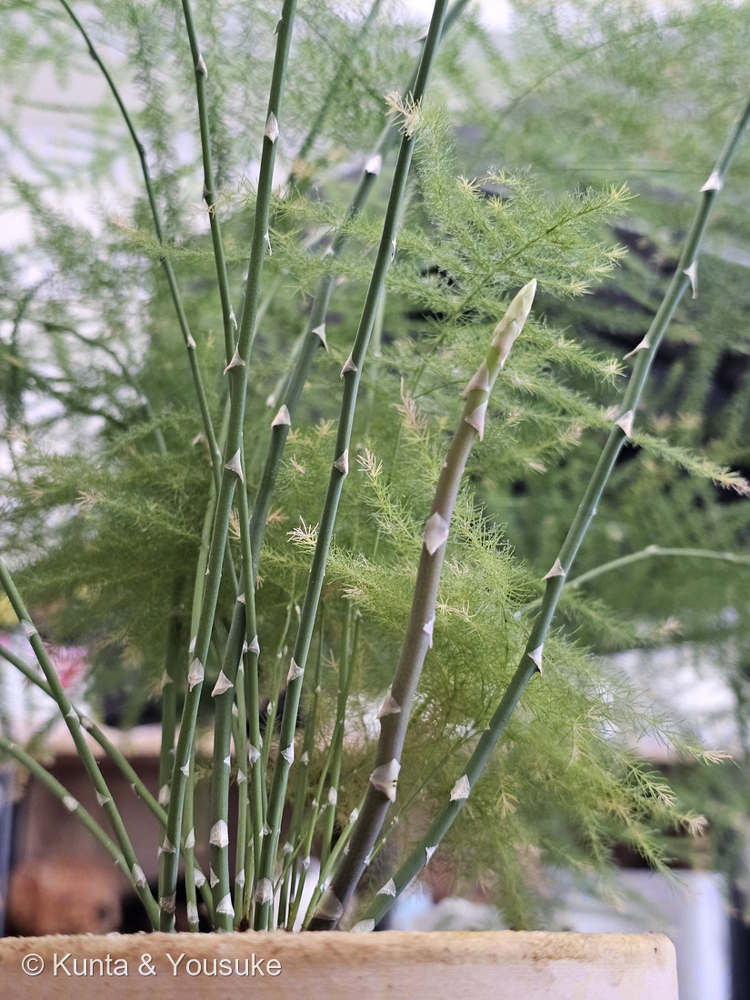
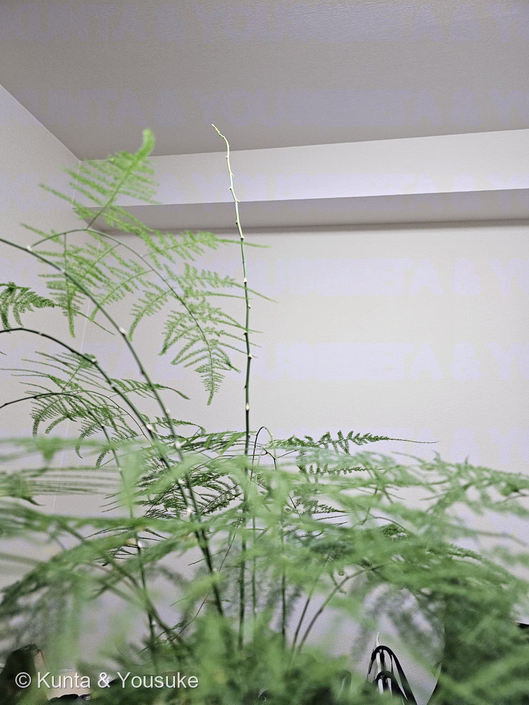
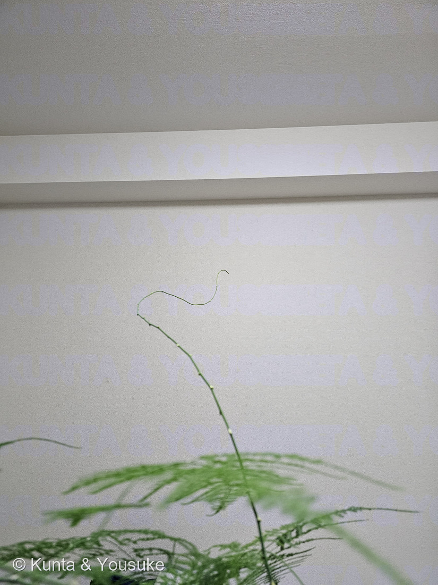
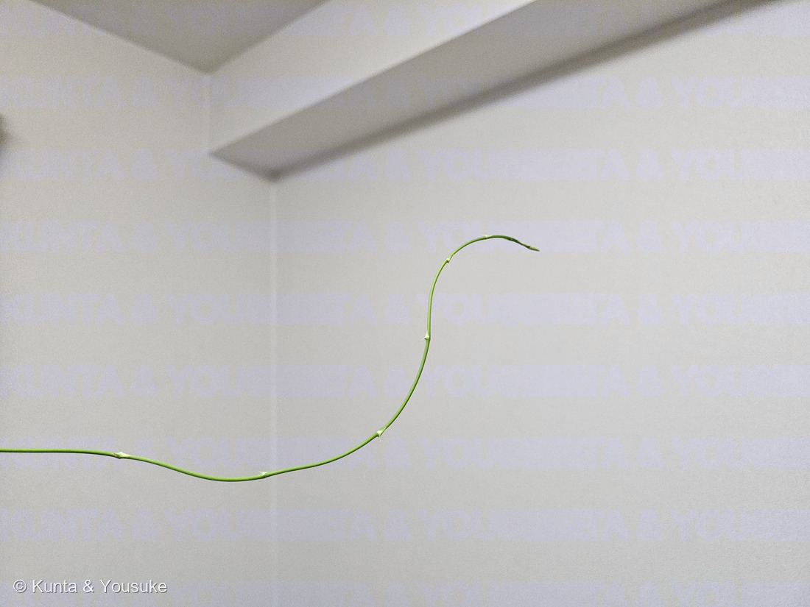

地図を読み込んでいるよ…
🔍 写真も地図も、押しているあいだ拡大して見られるよ（スマホは指を置いてすこし待ってね）。
🌍 の地図＝この子がもともと自生している場所を緑に。南部アフリカ（南西はカルー地方のカリツドルプあたりまで）。
⚠出典は「南部アフリカ」までしか言っていない（南西はカルー地方のカリツドルプあたりまで、とある）ので、地図は南アフリカ共和国だけを塗った。
⚠ 地図は国（日本と中国だけ県・省）までしか塗れないから、ほんとうの分布より広く見えていることがあるよ。地図はだいたいの場所。正確なところは、上の文を見てね。
アスパラガス・セタセウス
Asparagus setaceus (Kunth) Jessop
別名 · アスパラガス・ファーン／レースファーン／プルモーサス
キジカクシ科 · Asparagaceae（クサスギカズラ属）
おうちの植物世話：陽介おうちの植物シリーズ
燻太さんの言葉「毎日観察していると、いつも違う角度を向いていて、もたれ掛かれる場所を探しているみたい」……⭐その動きには、ダーウィンがつけた名前があるよ（下の節に）。
名前と学名の由来
- Asparagus（アスパラガス）＝食用アスパラガスと同じ属名。ギリシャ語 asparagos（新芽・若い茎）に由来するといわれる。
- setaceus（セタケウス）＝ラテン語で「剛毛のある・糸状の」。細い糸のような葉状の枝（仮葉）にちなむ。
この植物のこと
- キジカクシ科クサスギカズラ属の観葉植物。「アスパラガス・ファーン」と呼ばれるが、シダ（fern）ではない。単子葉植物で、胞子でなく花・種子でふえる。
- ふわふわの緑の“葉”に見える部分は、実は葉ではなく枝が葉のようになったもの＝仮葉（cladode／葉状枝）。本当の葉は目立たない小さなうろこ状に退化している。← 観察のいちばんのポイント。
- 食用アスパラガスと同じ属の仲間（別種）。若い芽は、あの食べるアスパラそっくりの形でニョキッと伸びる。
- 明るい間接光を好み、乾燥には弱め（湿度と水を好む）。よく茂ると小さな白い花や赤い実（有毒）をつけることも。根（貯蔵根）が太く鉢いっぱいになりやすい。くわしい水やり等は下の「育て方のポイント」を。
- ※観葉アスパラガスには、セタセウス（繊細なレース状）・スプレンゲリー（垂れる・葉が太め）・フォックステール（穂状）などがあり紛らわしい。この株は細くレース状の枝ぶりからセタセウスと見られる。
- ⭐その「紛らわしいスプレンゲリー」が、図鑑に来た——No.037 アスパラガス・スプレンゲリー（A. densiflorus 'Sprengeri'）。並べて見ると、ちがいがはっきりする：この008は仮葉が糸のように細く、水平に羽状に広がる（＝レース状の平面）。037は仮葉が幅広く扁平で、節ごとに放射状に束生する（＝ふさふさの立体）。同じ属、同じ「仮葉」の手品を使う兄弟。
⭐⭐ うろこが、写った ── 「本当の葉」と「葉のふりをした枝」が、一枚に
⭐写真②を見て。この図鑑に008を登録した日、ぼくはこう書いたんだ——「本当の葉は目立たない小さなうろこ状に退化している」。⚠でも、そのうろこの写真は無かった。言葉だけだった。
⭐⭐2026年7月12日の朝、それが写った。
- ⭐節ごとに、乾いた薄紙のような三角形のうろこが1枚ずつついていて、先が反り返っている。──これが「本当の葉」。“the true leaves are tiny dry scales”〔NC州立大〕そのままの姿だよ。
- ⭐⭐そして、そのうろこのわきから、細い糸のような緑が束になって出ている。──これが仮葉（cladode／葉状枝）＝「葉のふりをした枝」。
- ⭐⭐⭐つまり、「本当の葉」と「その葉のわきから出た、葉に化けた枝」が、同じ一枚に並んで写っている。──葉のわきから出るのは枝、という植物のきまりが、そのまま見えているんだ。この子の手品の、種明かしの写真だよ。
- ⭐右に立っている新芽は、うろこが重なったまままだ開いていない状態。⭐食べるアスパラガスの穂先と、そっくり——同じ Asparagus 属だからね。
- ⚠茎にはトゲもある（“The scrambling stems produce spines”／“The spines that form along the length of the stem are sharp”〔NC州立大〕）。⚠剪定のときは手袋を。
⭐⭐⭐ 燻太さんの観察 ── 「もたれ掛かれる場所を探しているみたい」
写真③④⑤を撮ったとき、燻太さんはこう言った。
「毎日観察していると、いつも違う角度を向いていて、もたれ掛かれる場所を探しているみたい。育て始めの頃はこんなに伸びなかったのに、最近の茎はずっとこんな調子。」
⭐⭐この2つとも、当たっているんだ。順番に見ていくね。
① 「探しているみたい」── その動きには、名前がある
- ⭐⭐つる植物の先端は、まっすぐ伸びるのではなく、少しずつ向きを変えながら円を描いて伸びる。この動きを回旋運動（circumnutation／サーカムニューテーション）という。
- ⭐⭐⭐名づけたのはダーウィン。彼はこの動きを“a continuous self-bowing of the whole shoot, successively directed to all points of the compass”（茎ぜんたいが、たえず自分でおじぎをしていて、その向きが順ぐりに東西南北すべてをめぐっていく）と書いた。
- ⭐⭐なぜそんなことをするのか＝“By circumnutating, twiners increase the probability of encountering a support”（回りながら伸びれば、支えにぶつかる確率が上がる）。──⭐まっすぐ伸びる茎は、まっすぐ先にあるものにしか出会えない。回っている茎は、まわり中を探せる。
- ⭐⭐⭐「もたれ掛かれる場所を探しているみたい」——⭐燻太さんのこの一言は、教科書の説明とほとんど同じことを言っているんだ。毎日ちがう向きを向いていたのは、そういうことだったんだね。
- ⚠正直に書いておくね：⭐ぼくらが持っているのは「毎日ちがう向きだった」という燻太さんの観察と、この3枚の写真だけ。⚠この株が本当に円を描いているところは、まだ記録していない。
- 🔬⭐⭐だから、確かめかたを決めておこう。──毎日おなじ時刻に、おなじ場所から、先端を1枚ずつ撮る（できれば真上から）。並べたときに先端が時計回り／反時計回りにめぐっていたら、それが回旋運動の証拠だよ。⭐この子は室内にいるから、風のせいにされない——うちの子だからこそできる観察なんだ。
② 「育て始めの頃はこんなに伸びなかった」── 本性が出てきた
- ⭐⭐この子は、そもそも「つる植物」なんだ。NC州立大の記載＝“It has wiry stems with branches that scramble or climb, if support is provided”（針金のような茎で、支えがあればよじ登る）。
- ⭐⭐そして大きさが、まるでちがう：室内の観葉としては 2〜3フィート（約60〜90cm）だけれど、自生地では 10〜20フィート（約3〜6m）〔NC州立大〕。──⭐「最近の茎はずっとこんな調子」は、株が充実して、本来の姿が出てきたということだと思う。買ってきたときの、こんもりした鉢の姿のほうが、この子にとっては仮の姿だったんだ。
- ⭐登録した日にぼくらが決めた方針が、効いているね——「置き場所の都合で今は窓に寄せられないので、当面は自由に伸ばして“生態観察”を楽しむ」。⭐その「自由に伸ばす」が、この3枚を連れてきた。
⭐ 図鑑の「登り方」に、この子も入る
- ちょうど今日、178 センニンソウで「登り方が5つになった」と書いたばかりなんだ（巻きひげ／茎が巻きつく／気根／かぎ状のトゲ／葉柄でつかむ）。
- ⭐⭐この子は、そのうち2つを使う——茎が巻きつくのと、かぎになるトゲでひっかかる（072 ハナキリンと同じ手）。⭐1本で2つ持っている子は、図鑑でこの子がはじめて。
- ⚠でも、うちの部屋の壁には、つかまるところが何も無い。──写真④の先端が宙で折り返しているのも、写真⑤で壁ぎわを横に走っているのも、⭐「探したけれど、見つからなかった」姿なんだね。
⭐ ダーウィンは、この図鑑で3人目
044 ペンタスと147 サクラソウで、ぼくらは異形花柱性（2種類の花）の話をした。あれもダーウィンの研究だった。⭐⭐でも前の2回は「花」の話。今回はじめて、「動き」の話でダーウィンが出てきたね。同じ人が、花のかたちも、茎の動きも見ていたんだ。
🪴 これから、どうしよう
- ⭐支柱か、麻ひもの輪を1つ立ててみる——⭐探しているものを、置いてあげるってことだね。つかまったら、そこから先の伸び方が変わるはず。
- ⚠剪定は、まだ待とう。登録の日に「どこかのタイミングで剪定したい」と書いたけれど、⭐この長い茎は、いま図鑑にいちばん面白いものを見せてくれているから。⭐強めの切り戻しは早春がベストだし、それまでに回旋運動の記録を撮ろうよ。
参考：Gardenia／Bloomscape／Gardeners' World／NC State Extension Gardener Plant Toolbox「Asparagus setaceus」（wiry stems with branches that scramble or climb, if support is provided／The scrambling stems produce spines／The spines that form along the length of the stem are sharp／The tiny leaf branches are known as cladodes, and the true leaves are tiny dry scales／室内 2〜3 ft・自生地 10〜20 ft／実は有毒（sapogenins））。
回旋運動＝Moving with climbing plants from Charles Darwin's time into the 21st century（American Journal of Botany, 2009）（ダーウィンの定義 a continuous self-bowing of the whole shoot, successively directed to all points of the compass ／ By circumnutating, twiners increase the probability of encountering a support）